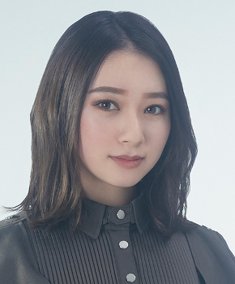

砂塵さじん

初収録リリース「Eienyori Nagai Isshun - Anokoro Tashikani Sonzaishita Watashitachi」のジャケット
欅坂46
発売日：2020-10-07
収録：Eienyori Nagai Isshun - Anokoro Tashikani Sonzaishita Watashitachi（BestAL）
種別：カップリング曲（全員）
センター：菅井友香
作曲：LINDY、TAKU Tanaka
編曲：TAKU Tanaka
ライブ披露：2件
フォーメーション
上が後列、下が前列です。色付きがセンター。（参考データに基づく）

佐藤詩織 関有美子
関有美子 山﨑天
山﨑天 藤吉夏鈴
藤吉夏鈴松平璃子
渡辺梨加
 齋藤冬優花
齋藤冬優花上村莉菜
松田里奈
 守屋茜
守屋茜土生瑞穂
 武元唯衣
武元唯衣原田葵
 井上梨名
井上梨名 小池美波
小池美波 渡邉理佐
渡邉理佐尾関梨香
 菅井友香
菅井友香 森田ひかる
森田ひかる 小林由依
小林由依 田村保乃
田村保乃参加メンバー（21名）
上村莉菜、尾関梨香、小池美波、小林由依、齋藤冬優花、佐藤詩織、菅井友香、土生瑞穂、原田葵、守屋茜、渡辺梨加、渡邉理佐、井上梨名、関有美子、武元唯衣、田村保乃、藤吉夏鈴、松平璃子、松田里奈、森田ひかる、山﨑天